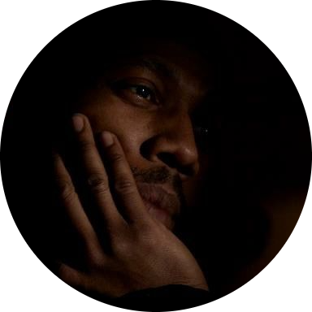

|

Photo By Katie Piper |
Jason "Jsun" EberhardtOwner/Creator at undrstatd llc
With a bachelor's degree in hand, from Temple University, I embarked
on a journey of creativity and expression through filmmaking. Over
the years I have amassed experience as a Director, Cinematographer,
Producer, Editor, Gaffer, Grip, AD, Production Manager, and PA.
Extensive and varied, I know, but I don't shy away from learning
something new. My work has encompassed Music Videos, Documentaries,
Feature Films, Instructional Videos, Short Films, Spec Commercials,
and TV pilots. Over time I got into photography as a hobby to keep
"my eye busy" and discover new ways of seeing. |
| Date | Production | Position |
|---|---|---|
| 2017 | Frat Star | First AD |
| 2014 | Stitch | Prod. Manager/Prod. Coordinator |
| 2014 | tdKusanagi's Edge: Prologue | Assistant Camera |
| 2014 | True Love | 2nd Assistant Camera |
| 2013 | Halfway Home | Gaffer |
| 2010 | In The Name of Love | Key Grip |
| 2010 | Rear Truth | Gaffer |
| 2010 | Colors | Gaffer |
| 2010 | Takedowns and Falls | Camera Operator |
| 2009 | Fantastic Glass Portrait | Gaffer |